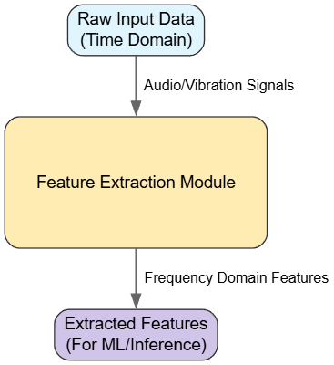
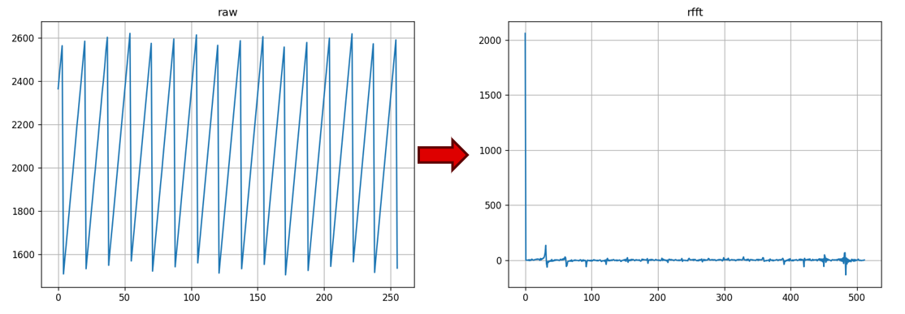
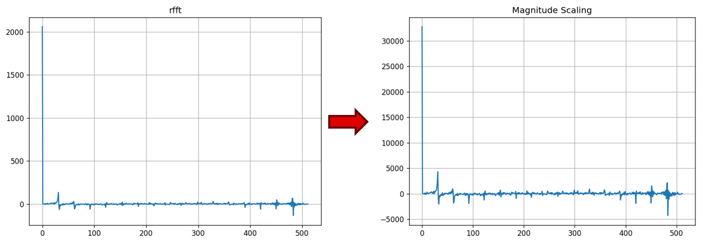
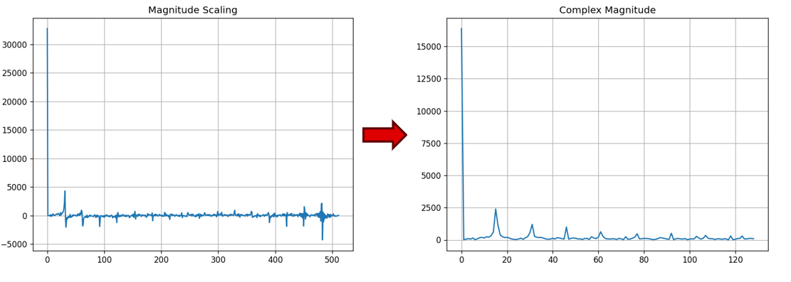
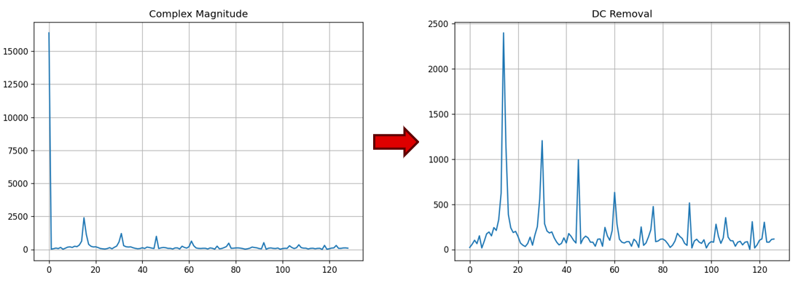
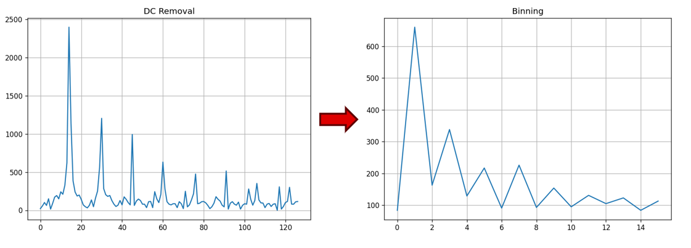
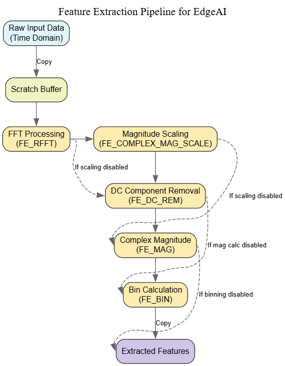

Feature Extraction User Guide for EdgeAI Applications on MSPM33 Devices¶
Introduction¶
Feature extraction is a critical component of many EdgeAI applications, particularly for audio and vibration signal processing. The feature extraction module provides efficient signal processing functions optimized for embedded systems, leveraging ARM libraries for optimal performance.

Fig. 16 Feature Extraction Pipeline Overview¶
Available Feature Extraction Functions¶
The module supports the following feature extraction techniques:
1. Real Fast Fourier Transform (RFFT)¶
Converts time-domain signals to frequency domain representation.

Fig. 17 RFFT Transformation¶
Functionality: Transforms raw input data into frequency components
Configuration: Enable with
FE_RFFTdefineUse case: Frequency analysis of audio or vibration signals
2. Windowing (MSPM33 Enhanced)¶
Applies window functions to reduce spectral leakage in FFT analysis.
Functionality: Multiplies input signal by window coefficients before FFT
Configuration: Enable with
FE_WINDOWdefineSupported Windows: Hann window with pre-computed coefficients
Available Sizes: 32, 64, 128, 256, 512, 1024, 2048, 4096 samples
Use case: Improved frequency resolution for spectral analysis
MSPM33 Advantage: Pre-computed floating-point Hann window coefficients (fpu_fft_hann.h) provide efficient windowing without runtime computation overhead.
3. Magnitude Scaling¶
Scales magnitude values for better numerical representation.

Fig. 18 Magnitude Scaling¶
Functionality: Applies scaling to prevent overflow/underflow
Configuration: Enable with
FE_COMPLEX_MAG_SCALEdefine and setFE_COMPLEX_MAG_SCALE_FACTORUse case: Normalizing signal magnitude to appropriate range for subsequent processing
4. Complex Magnitude Calculation¶
Calculates the magnitude of complex numbers resulting from FFT.

Fig. 19 Complex Magnitude Calculation¶
Functionality: Computes absolute values from complex FFT output
Configuration: Enable with
FE_MAGdefineUse case: Extracting power spectrum information
5. DC Component Removal¶
Removes DC offset from the signal.

Fig. 20 DC Component Removal¶
Functionality: Excludes the first component (DC) from processing
Configuration: Enable with
FE_DC_REMdefineUse case: Eliminating signal bias for improved feature accuracy
6. Mean Removal¶
Removes the mean value from the input signal.
Functionality: Subtracts mean from each sample for zero-centered data
Configuration: Enable with
FE_MEAN_REMdefineUse case: Preprocessing for signals with varying DC offset
7. Bin Calculation¶
Groups frequency components into bins for dimensionality reduction.

Fig. 21 Bin Calculation¶
Functionality: Averages frequency components within defined bins
Configuration: Enable with
FE_BINdefineOptional normalization: Enable with
FE_BIN_NORMALIZEdefineUse case: Reducing feature dimension while preserving spectral characteristics
8. Log Scaling¶
Applies logarithmic scaling to feature values.
Functionality: Converts linear magnitude to logarithmic scale (dB-like)
Configuration: Enable with
FE_LOGdefineUse case: Compressing dynamic range for audio and vibration signals
9. Frame Concatenation¶
Combines multiple frames for temporal context.
Functionality: Concatenates features from consecutive frames
Configuration: Set
FE_FRAMES_TO_CONCATparameterUse case: Capturing temporal patterns in time-varying signals
10. Batch Normalization¶
Normalizes features for neural network input.
Functionality: Applies learned normalization parameters (mean, scale)
Configuration: Enable with batch normalization parameters in
user_input_config.hUse case: Preparing features for quantized neural network inference
Configuration Parameters¶
The following parameters can be configured in user_input_config.h:
Parameter |
Description |
|---|---|
|
Size of input frame for processing |
|
Number of features to extract per frame |
|
Size of each frequency bin |
|
When defined, normalizes bin values by dividing by bin size |
|
Number of frames to concatenate |
|
Number of input channels (for multi-sensor applications) |
|
Skip normalization for int8 output |
|
Use int8 output type instead of float |
Usage Example¶
MSPM33 (Floating-Point)¶
#include "feature_extract.h"
#include "fpu_fft_hann.h"
// Define buffers (floating-point for MSPM33)
float rawInput[FE_FRAME_SIZE];
float extractedFeatures[FE_FEATURE_SIZE_PER_FRAME];
// Hann window coefficients (select based on frame size)
const float hannWindow[] = HANN256; // For 256-point FFT
// Initialize feature extraction
feature_extraction fe_context;
fe_context.input_buffer = rawInput;
fe_context.output_buffer = extractedFeatures;
FE_allocFeatureExtract(&fe_context);
FE_initFeatureExtract(&fe_context);
// Process data with FPU-optimized operations
FE_runFeatureExtract(&fe_context);
// Use extracted features for inference
Processing Pipeline¶

Fig. 22 Complete Processing Pipeline¶
The feature extraction module implements a flexible pipeline:
Raw input data is copied to a scratch buffer
If
FE_MEAN_REMis defined, mean is removed from the signalIf
FE_WINDOWis defined, windowing function is applied (MSPM33)If
FE_RFFTis defined, FFT is performedIf
FE_COMPLEX_MAG_SCALEis defined, scaling is appliedIf
FE_DC_REMis defined, DC component is removedIf
FE_MAGis defined, complex magnitude is calculatedIf
FE_BINis defined, bin calculation is performedIf
FE_LOGis defined, log scaling is appliedIf frame concatenation is enabled, frames are combined
Batch normalization or direct copy (based on configuration)
Final features are copied to the output buffer
Platform-Specific Implementations¶
MSPM33 (Cortex-M33)¶
Uses native floating-point operations with hardware FPU
Pre-computed Hann window coefficients for efficient windowing
Enhanced DAP integration for real-time visualization
Located in:
source/m33/feature_extract/
Key MSPM33 Files: - feature_extract.h / feature_extract.c - Main API - feature_extract_m33.c - M33-optimized implementation - fpu_fft_hann.h - Pre-computed Hann window coefficients
Performance Considerations¶
General¶
The module uses ARM optimized libraries for efficient computation
Buffer swapping is used to minimize memory copies
Configuration parameters should be adjusted based on available memory and computational resources
Bin calculation can significantly reduce feature dimension, saving memory and computation in subsequent processing
MSPM33-Specific¶
Leverage hardware FPU for floating-point operations
Pre-computed Hann windows eliminate runtime computation
Larger memory allows for bigger frame sizes and more features
Native float precision reduces quantization errors
Best Practices¶
Select appropriate frame size based on your application requirements and sampling frequency
Configure bin size to balance feature resolution and dimensionality
Consider enabling normalization for consistent feature scaling across different input amplitudes
Remove DC component when analyzing AC signals to focus on frequency content
Use appropriate scaling factors to prevent numerical issues (overflow/underflow)
Enable windowing (MSPM33) for improved spectral analysis with reduced leakage
Use frame concatenation to capture temporal patterns in time-varying signals
Validate with test vectors using
FE_compareModelInput()before deployment